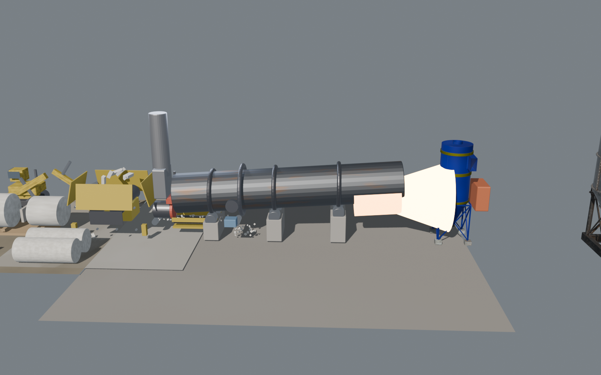
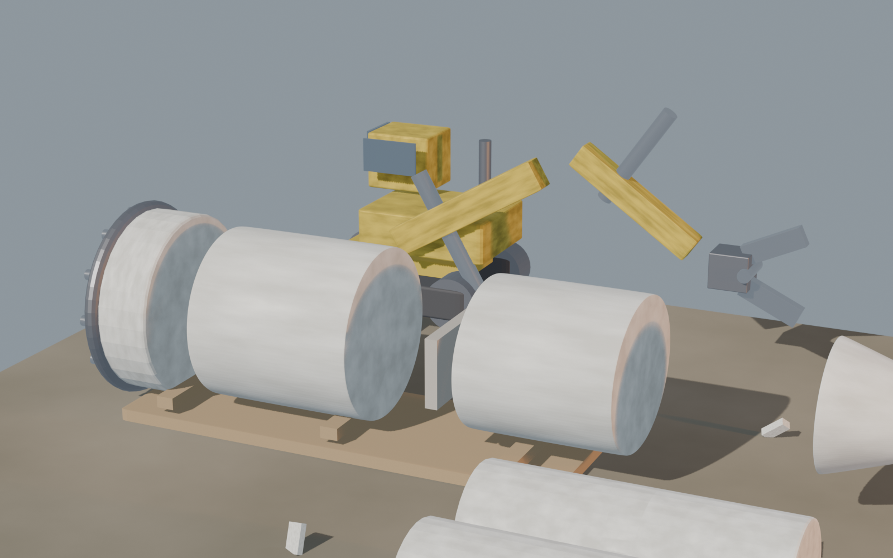
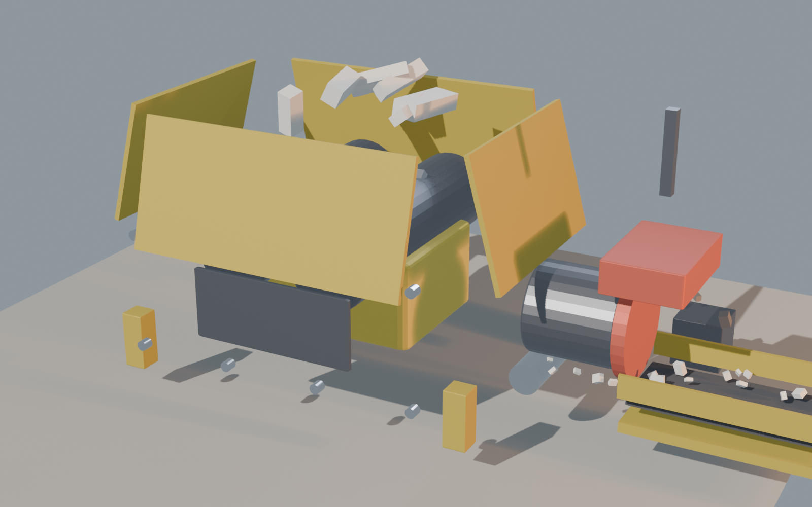
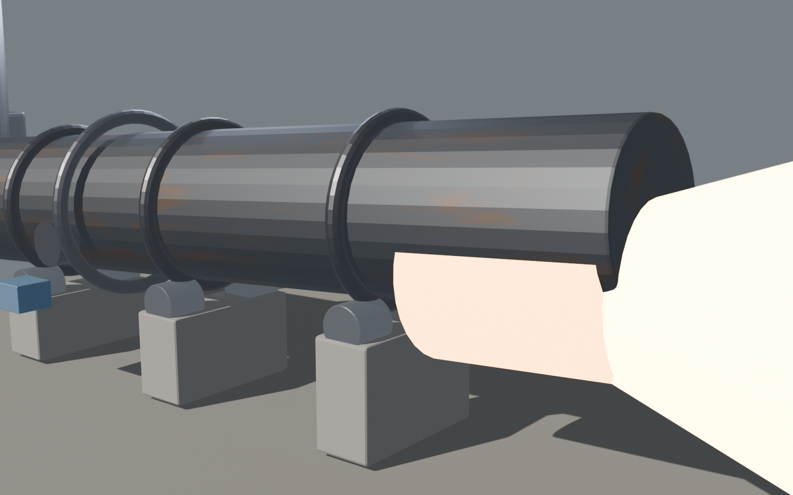
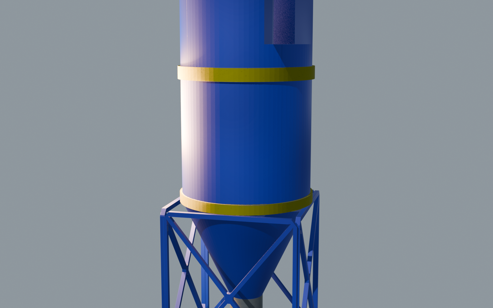
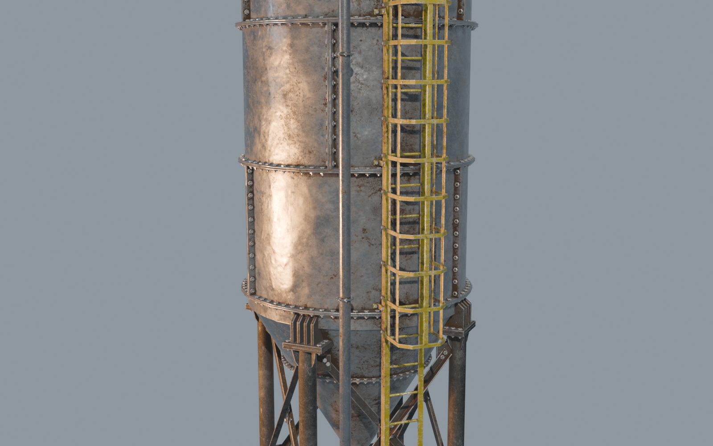

The Plant — in Blender
Four stages of the wind turbine blade recycling process, modelled in 3D. Source assets handed off to the Unity team. Real-world references locked.
Sprint 3 Deck
Process Overview · 3D

End-to-end flow — 4 stages, 1,389 objects
From left: blade decommissioning yard · twin-shaft shredder · rotary kiln with discharge flame · cyclone separator · clinker silo. Single Blender scene, organised by stage prefix, ready to slice into per-stage Unity scenes.
Per-Stage Detail

Stage 01
On-Site Treatment

Stage 02
Mechanical Shredding

Stage 03
Thermal Decomposition Reactor

Stage 04
Integrated Material Separation

Downstream
Usage & Replacement
Coming next
Detail pass in Unity